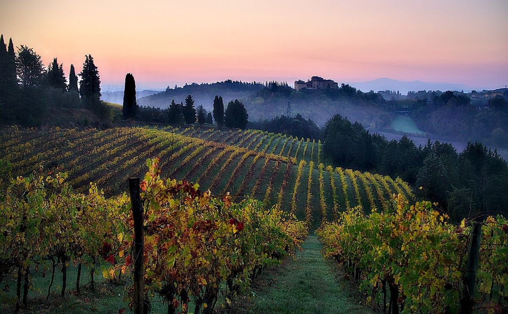
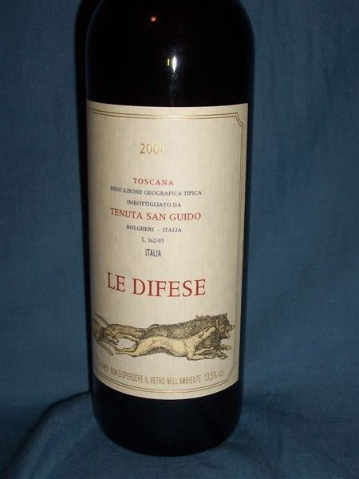

RED
Tuscany, in central Italy, is the great home of Sangiovese, the basis of Chianti, Brunello di Montalcino and Vino Nobile di Montepulciano. Its coast also gave rise to the Bordeaux-variety wines known as Super Tuscans.

Tuscan viticulture dates back to the Etruscans and developed in the Middle Ages and the Renaissance under the patronage of the cities and the great Florentine families, several of which are still involved in wine today. In 1716 Grand Duke Cosimo III de' Medici delimited the areas of Chianti, Pomino, Carmignano and Valdarno di Sopra. In the nineteenth century, at the castle of Brolio, Bettino Ricasoli defined a formula for Chianti based on Sangiovese. In 1966 Vernaccia di San Gimignano became Italy's first DOC, and in 1980 Brunello di Montalcino and Vino Nobile di Montepulciano were among the first DOCGs. From the late 1960s, the Super Tuscans opened a parallel path based on freedom of grape choice and barrel ageing.
The region combines a coastal strip with a Mediterranean climate, warm dry summers and the moderating influence of the Tyrrhenian Sea, and a hilly interior with a more continental climate and greater differences between day and night temperatures. Most vineyards lie on slopes, often among olive groves and woodland, at altitudes that can exceed 500 metres in Chianti.
The inland hills are rich in galestro, a friable, schistous marl, and alberese, a compact limestone, together with sandstone and clay. On the coast, in areas such as Bolgheri and the Maremma, sandy, clay and alluvial soils with gravel predominate.
The Chianti DOCG, with subzones such as Rufina and Colli Senesi, surrounds the historic core of Chianti Classico, between Florence and Siena. Further south lie Brunello di Montalcino and Vino Nobile di Montepulciano, where Sangiovese is known locally as Prugnolo Gentile. Other DOCGs include Carmignano, which traditionally allows Cabernet, Morellino di Scansano in the Maremma and the white Vernaccia di San Gimignano. On the coast, the Bolgheri DOC and the Bolgheri Sassicaia DOC are the centre of Bordeaux-style blends. The broad Toscana IGT covers wines made outside the rules of the designations.
Sangiovese dominates the reds, sometimes joined by local varieties such as Canaiolo and Colorino or by international ones such as Cabernet Sauvignon, Merlot and Syrah. Leading whites include Trebbiano Toscano, Malvasia, Vernaccia and, on the coast, Vermentino. A traditional wine of the region is Vin Santo, made from dried grapes and aged for years in small barrels called caratelli.


